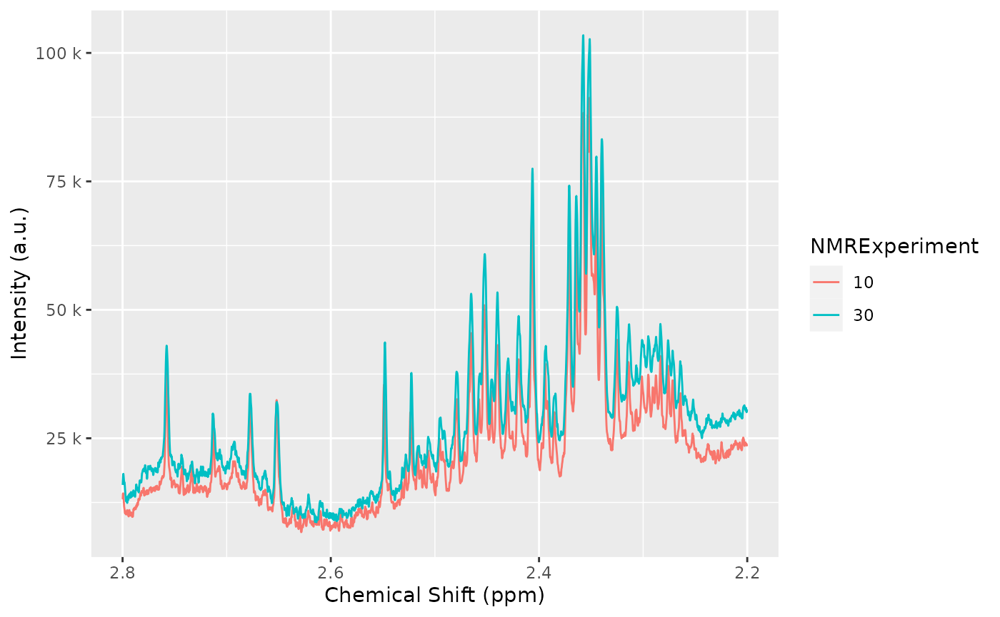
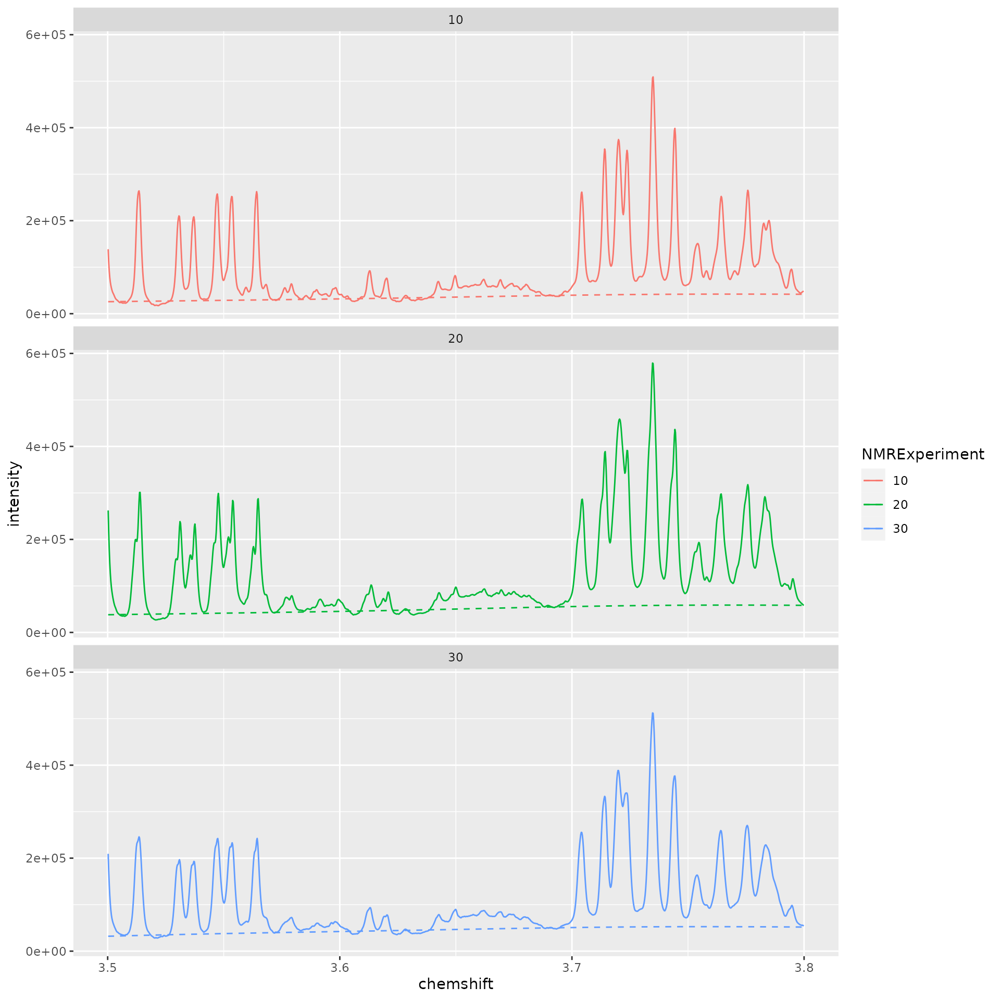
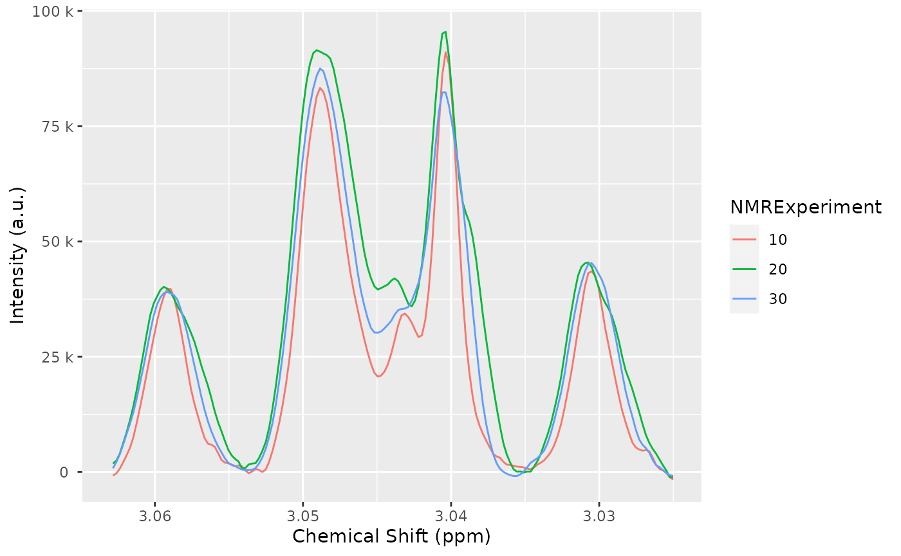
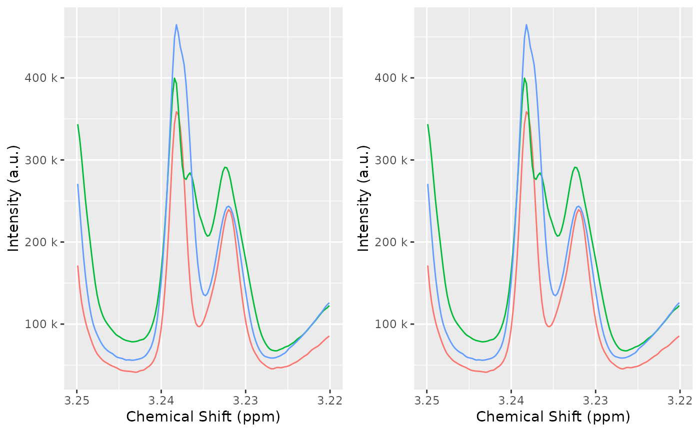

Introduction to AlpsNMR
AlpsNMR authors
2022-06-15
Source:vignettes/Vig01-introduction-to-alpsnmr.Rmd
Vig01-introduction-to-alpsnmr.RmdAbstract
An introduction to the AlpsNMR package, showing the most relevant functions and a proposed workflow. This includes loading bruker NMR samples, adding sample annotations, preprocessing the spectra, detecting outliers, detecting peaks, aligning the samples and integrating the peaks to build a peak table.
Getting started
The AlpsNMR package has most of its functions prefixed
with nmr_. The main reason for this is to avoid conflicts
with other packages and to make it easy for the user to discover the
functions from the package using autocompletion. Most coding
environments (e.g. RStudio), by typing nmr_ followed by
pressing the tab key, one can see most of the function names with their
arguments.
This vignette assumes some basic knowledge of NMR and data analysis, and some basic R programming.
We will start by loading AlpsNMR along some convenience
packages:
##
## Attaching package: 'dplyr'## The following objects are masked from 'package:stats':
##
## filter, lag## The following objects are masked from 'package:base':
##
## intersect, setdiff, setequal, union## Loading required package: future## Loading required package: magrittrEnable parallellization
This package is able to parallellize several functions through the
use of the BiocParallel package. Whether to parallelize or
not is left to the user that can control the parallellization
registering backends. Please check the BiocParallel
introduction for further details
Data: The MeOH_plasma_extraction dataset
To explore the basics of the AlpsNMR package, we have included four NMR samples acquired in a 600 MHz Bruker instrument bundled with the package. The samples are pooled quality control plasma samples, that were extracted with methanol, and therefore only contain small molecules.
If you have installed this package, you can obtain the directory where the four samples are with the command
MeOH_plasma_extraction_dir <- system.file("dataset-demo", package = "AlpsNMR")
MeOH_plasma_extraction_dir## [1] "/__w/_temp/Library/AlpsNMR/dataset-demo"The demo directory includes three zipped samples and a dummy Excel metadata file.
list.files(MeOH_plasma_extraction_dir)## [1] "10.zip" "20.zip" "30.zip"
## [4] "dummy_metadata.xlsx" "README.txt"This is just some quality control dataset, the metadata is just a simple dummy table:
MeOH_plasma_extraction_xlsx <- file.path(MeOH_plasma_extraction_dir, "dummy_metadata.xlsx")
annotations <- readxl::read_excel(MeOH_plasma_extraction_xlsx)
annotations## # A tibble: 3 × 3
## NMRExperiment SubjectID TimePoint
## <chr> <chr> <chr>
## 1 10 Ana baseline
## 2 20 Ana 3 months
## 3 30 Elia baselineLoading samples
The function to read samples is called nmr_read_samples.
It expects a character vector with the samples to load that can be paths
to directories of Bruker format samples or paths to JDX files.
Additionally, this function can filter by pulse sequences (e.g. load only NOESY samples) or loading only metadata.
zip_files <- fs::dir_ls(MeOH_plasma_extraction_dir, glob = "*.zip")
zip_files## /__w/_temp/Library/AlpsNMR/dataset-demo/10.zip
## /__w/_temp/Library/AlpsNMR/dataset-demo/20.zip
## /__w/_temp/Library/AlpsNMR/dataset-demo/30.zip
dataset <- nmr_read_samples(sample_names = zip_files)
dataset## An nmr_dataset (3 samples)Adding annotations
To explore the metadata and the annotations, see the handling metadata and annotations vignette. Here we just do a basic introduction:
As we have not added any metadata to this dataset, the only column we
see is the NMRExperiment:
nmr_meta_get(dataset, groups = "external")## # A tibble: 3 × 1
## NMRExperiment
## <chr>
## 1 10
## 2 20
## 3 30We can read some external metadata from excel:
excel_file <- file.path(MeOH_plasma_extraction_dir, "dummy_metadata.xlsx")
subject_timepoint <- read_excel(excel_file, sheet = 1)
subject_timepoint## # A tibble: 3 × 3
## NMRExperiment SubjectID TimePoint
## <chr> <chr> <chr>
## 1 10 Ana baseline
## 2 20 Ana 3 months
## 3 30 Elia baselineAnd add it to the dataset:
dataset <- nmr_meta_add(dataset, metadata = subject_timepoint, by = "NMRExperiment")The table information is now embedded in our dataset and we can make use of it in further data analysis steps.
nmr_meta_get(dataset, groups = "external")## # A tibble: 3 × 3
## NMRExperiment SubjectID TimePoint
## <chr> <chr> <chr>
## 1 10 Ana baseline
## 2 20 Ana 3 months
## 3 30 Elia baselineInterpolation
1D NMR samples can be interpolated together, in order to arrange all the spectra into a matrix, with one row per sample. The main parameters we would need is the range of ppm values that we want to interpolate and the resolution.
We can interpolate the dataset, obtaining an
nmr_dataset_1D object:
dataset <- nmr_interpolate_1D(dataset, axis = c(min = -0.5, max = 10))If the axis = NULL then the ppm axis is autodetected
from the samples.
Plotting samples
The AlpsNMR package offers the possibility to plot
nmr_dataset_1D objects. Plotting many spectra with so many
points is quite expensive so it is possible to include only some regions
of the spectra or plot only some samples.
Use ?plot.nmr_dataset_1D to check the parameters, among
them:
-
NMRExperiment: A character vector with the NMR experiments to plot -
chemshift_range: A ppm range to plot only a small region, or to reduce the resolution -
interactive: To make the plot interactive -...: Can be used to pass additional parameters such ascolor = "SubjectID"that are passed as aesthetics to ggplot.

Creating interactive plots
The option interactive = TRUE described above has some
performance limitations. As high performance workaround, you can make
many plots interactive with the function
plot_interactive.
This function will use WebGL technologies to create a webpage that, once opened, allows you to interact with the plot.
Due to technical limitations, these plots need to be opened manually and can’t be embedded in RMarkdown documents. Therefore, the function saves the plot in the directory for further exploration. Additionally, some old web browsers may not be able to display these interactive plots correctly.
plt <- plot(dataset, NMRExperiment = c("10", "30"), chemshift_range = c(2.2, 2.8))
plot_interactive(plt, "plot_region.html")Exclude regions
Some regions can easily be excluded from the spectra with
nmr_exclude_region. Note that the regions are fully removed
and not zeroed, as using zeros complicates a lot the implementation1 and has
little advantages.
regions_to_exclude <- list(water = c(4.6, 5), methanol = c(3.33, 3.39))
dataset <- nmr_exclude_region(dataset, exclude = regions_to_exclude)
plot(dataset, chemshift_range = c(4.2, 5.5))
Filter samples
Maybe we just want to analyze a subset of the data, e.g., only a class group or a particular gender. We can filter some samples according to their metadata as follows:
samples_10_20 <- filter(dataset, SubjectID == "Ana")
nmr_meta_get(samples_10_20, groups = "external")## # A tibble: 2 × 3
## NMRExperiment SubjectID TimePoint
## <chr> <chr> <chr>
## 1 10 Ana baseline
## 2 20 Ana 3 monthsRobust PCA for outlier detection
The AlpsNMR package includes robust PCA analysis for outlier
detection. With such a small demo dataset, it is not practical to use,
but check out the documentation of nmr_pca_outliers_*
functions.
pca_outliers_rob <- nmr_pca_outliers_robust(dataset, ncomp = 3)
nmr_pca_outliers_plot(dataset, pca_outliers_rob)
Baseline removal
Spectra may display an unstable baseline, specially when processing
blood/fecal blood/fecal samples. If so,
nmr_baseline_removal subtract the baseline by means of
Asymmetric Least Squares method.
See before:

And after:
dataset = nmr_baseline_removal(dataset, lambda = 6, p = 0.01)
plot(dataset, chemshift_range = c(3.5,3.8))
Peak detection
The peak detection is performed on short spectra segments using a
continuous wavelet transform. See ?nmr_detect_peaks for
more information.
Our current approach relies on the use of the baseline threshold
(baselineThresh) automatic calculated (see
?nmr_baseline_threshold) and the Signal to Noise Threshold
(SNR.Th) to discriminate valid peaks from noise.
The combination of the baselineThresh and the
SNR.Th optimizes the number of actual peaks from noise.
The advantage of the SNR.Th method is that it estimates
the noise level on each spectra region independently, so in practice it
can be used as a dynamic baseline threshold level.
peak_table <- nmr_detect_peaks(
dataset,
nDivRange_ppm = 0.1,
scales = seq(1, 16, 2),
baselineThresh = NULL,
SNR.Th = 3
)
NMRExp_ref <- nmr_align_find_ref(dataset, peak_table)
message("Your reference is NMRExperiment ", NMRExp_ref)## Your reference is NMRExperiment 10
nmr_detect_peaks_plot(dataset, peak_table, NMRExperiment = "20", chemshift_range = c(3.5,3.8))
Spectra alignment
To align the sample, we use the nmr_align function,
which in turn uses a hierarchical clustering method (see
?nmr_align for further details).
The maxShift_ppm limits the maximum shift allowed for
the spectra.
nmr_exp_ref <- nmr_align_find_ref(dataset, peak_table)
dataset_align <- nmr_align(dataset, peak_table, nmr_exp_ref, maxShift_ppm = 0.0015, acceptLostPeak = FALSE)
Normalization
There are multiple normalization techniques available. The most
strongly recommended is the pqn normalization, but it may
not be fully reliable when the number of samples is small, as it needs a
computation of the median spectra. Nevertheless, it is possible to
compute it:
dataset_norm <- nmr_normalize(dataset_align, method = "pqn")## Warning in norm_pqn(samples[["data_1r"]]): The Probabalistic Quotient
## Normalization requires several samples to compute the median spectra. Your
## number of samples is lowThe AlpsNMR package offers the possibility to extract
additional normalization information with
nmr_normalize_extra_info(dataset), to explore the
normalization factors applied to each sample:
The plot shows the dispersion with respect to the median of the normalization factors, and can highlight samples with abnormaly large or small normalization factors.
diagnostic <- nmr_normalize_extra_info(dataset_norm)
diagnostic$norm_factor## NMRExperiment norm_factor norm_factor_norm
## 1 10 522511034 0.870952
## 2 20 692174900 1.153758
## 3 30 599930942 1.000000
diagnostic$plot
Peak integration
1. Integration based on peak center and width
If we want to integrate the whole spectra, we need ppm from the
peak_table. See Peak detection section. The
function nmr_integrate_peak_positions generates a new
nmr_dataset_1D object containing the integrals from the
peak_table (ppm values corresponding to detected
peaks).
peak_table_integration = nmr_integrate_peak_positions(
samples = dataset_norm,
peak_pos_ppm = peak_table$ppm,
peak_width_ppm = 0.006)## New names:
## • `ppm_-0.0003` -> `ppm_-0.0003...3`
## • `ppm_0.8333` -> `ppm_0.8333...12`
## • `ppm_0.8605` -> `ppm_0.8605...16`
## • `ppm_0.8656` -> `ppm_0.8656...17`
## • `ppm_0.8784` -> `ppm_0.8784...19`
## • `ppm_0.8910` -> `ppm_0.8910...20`
## • `ppm_0.9034` -> `ppm_0.9034...21`
## • `ppm_0.9087` -> `ppm_0.9087...22`
## • `ppm_0.9158` -> `ppm_0.9158...23`
## • `ppm_0.9197` -> `ppm_0.9197...24`
## • `ppm_0.9314` -> `ppm_0.9314...25`
## • `ppm_0.9437` -> `ppm_0.9437...26`
## • `ppm_0.9554` -> `ppm_0.9554...27`
## • `ppm_0.9658` -> `ppm_0.9658...28`
## • `ppm_0.9903` -> `ppm_0.9903...30`
## • `ppm_1.0020` -> `ppm_1.0020...31`
## • `ppm_1.0208` -> `ppm_1.0208...33`
## • `ppm_1.0409` -> `ppm_1.0409...34`
## • `ppm_1.0526` -> `ppm_1.0526...35`
## • `ppm_1.0717` -> `ppm_1.0717...37`
## • `ppm_1.0804` -> `ppm_1.0804...38`
## • `ppm_1.1505` -> `ppm_1.1505...40`
## • `ppm_1.1980` -> `ppm_1.1980...42`
## • `ppm_1.2083` -> `ppm_1.2083...43`
## • `ppm_1.2720` -> `ppm_1.2720...47`
## • `ppm_1.3261` -> `ppm_1.3261...48`
## • `ppm_1.4423` -> `ppm_1.4423...51`
## • `ppm_1.4792` -> `ppm_1.4792...52`
## • `ppm_1.4914` -> `ppm_1.4914...53`
## • `ppm_1.5693` -> `ppm_1.5693...60`
## • `ppm_1.6195` -> `ppm_1.6195...65`
## • `ppm_1.6562` -> `ppm_1.6562...70`
## • `ppm_1.6748` -> `ppm_1.6748...72`
## • `ppm_1.6798` -> `ppm_1.6798...73`
## • `ppm_1.6801` -> `ppm_1.6801...74`
## • `ppm_1.6934` -> `ppm_1.6934...77`
## • `ppm_1.6989` -> `ppm_1.6989...78`
## • `ppm_1.7351` -> `ppm_1.7351...84`
## • `ppm_1.7525` -> `ppm_1.7525...86`
## • `ppm_1.7612` -> `ppm_1.7612...87`
## • `ppm_1.8749` -> `ppm_1.8749...95`
## • `ppm_1.8754` -> `ppm_1.8754...96`
## • `ppm_1.9210` -> `ppm_1.9210...98`
## • `ppm_1.9313` -> `ppm_1.9313...99`
## • `ppm_1.9618` -> `ppm_1.9618...102`
## • `ppm_2.0306` -> `ppm_2.0306...110`
## • `ppm_2.0423` -> `ppm_2.0423...111`
## • `ppm_2.0808` -> `ppm_2.0808...115`
## • `ppm_2.0922` -> `ppm_2.0922...116`
## • `ppm_2.1069` -> `ppm_2.1069...117`
## • `ppm_2.1149` -> `ppm_2.1149...118`
## • `ppm_2.1193` -> `ppm_2.1193...119`
## • `ppm_2.1273` -> `ppm_2.1273...120`
## • `ppm_2.1324` -> `ppm_2.1324...121`
## • `ppm_2.2834` -> `ppm_2.2834...135`
## • `ppm_2.2951` -> `ppm_2.2951...136`
## • `ppm_2.3251` -> `ppm_2.3251...139`
## • `ppm_2.3451` -> `ppm_2.3451...141`
## • `ppm_2.3513` -> `ppm_2.3513...142`
## • `ppm_2.3575` -> `ppm_2.3575...143`
## • `ppm_2.3646` -> `ppm_2.3646...144`
## • `ppm_2.3712` -> `ppm_2.3712...145`
## • `ppm_2.4196` -> `ppm_2.4196...149`
## • `ppm_2.4952` -> `ppm_2.4952...159`
## • `ppm_2.5065` -> `ppm_2.5065...160`
## • `ppm_2.5282` -> `ppm_2.5282...163`
## • `ppm_2.6101` -> `ppm_2.6101...167`
## • `ppm_2.6215` -> `ppm_2.6215...168`
## • `ppm_2.7577` -> `ppm_2.7577...179`
## • `ppm_2.7994` -> `ppm_2.7994...182`
## • `ppm_2.9333` -> `ppm_2.9333...191`
## • `ppm_3.0305` -> `ppm_3.0305...197`
## • `ppm_3.0488` -> `ppm_3.0488...199`
## • `ppm_3.2320` -> `ppm_3.2320...212`
## • `ppm_3.2382` -> `ppm_3.2382...213`
## • `ppm_3.3929` -> `ppm_3.3929...219`
## • `ppm_3.4243` -> `ppm_3.4243...223`
## • `ppm_3.4347` -> `ppm_3.4347...224`
## • `ppm_3.4830` -> `ppm_3.4830...230`
## • `ppm_3.5135` -> `ppm_3.5135...233`
## • `ppm_3.5371` -> `ppm_3.5371...235`
## • `ppm_3.5791` -> `ppm_3.5791...240`
## • `ppm_3.5981` -> `ppm_3.5981...242`
## • `ppm_3.7141` -> `ppm_3.7141...248`
## • `ppm_3.7237` -> `ppm_3.7237...250`
## • `ppm_3.7444` -> `ppm_3.7444...252`
## • `ppm_3.7643` -> `ppm_3.7643...254`
## • `ppm_3.7758` -> `ppm_3.7758...255`
## • `ppm_3.8438` -> `ppm_3.8438...261`
## • `ppm_3.8528` -> `ppm_3.8528...263`
## • `ppm_3.8886` -> `ppm_3.8886...266`
## • `ppm_3.8922` -> `ppm_3.8922...267`
## • `ppm_3.9090` -> `ppm_3.9090...268`
## • `ppm_3.9126` -> `ppm_3.9126...269`
## • `ppm_3.9333` -> `ppm_3.9333...270`
## • `ppm_3.9493` -> `ppm_3.9493...271`
## • `ppm_3.9573` -> `ppm_3.9573...272`
## • `ppm_3.9917` -> `ppm_3.9917...275`
## • `ppm_4.0020` -> `ppm_4.0020...276`
## • `ppm_4.0107` -> `ppm_4.0107...277`
## • `ppm_4.0974` -> `ppm_4.0974...278`
## • `ppm_4.1088` -> `ppm_4.1088...279`
## • `ppm_4.1320` -> `ppm_4.1320...281`
## • `ppm_4.1781` -> `ppm_4.1781...282`
## • `ppm_4.2281` -> `ppm_4.2281...286`
## • `ppm_4.2397` -> `ppm_4.2397...288`
## • `ppm_4.2466` -> `ppm_4.2466...289`
## • `ppm_4.2567` -> `ppm_4.2567...292`
## • `ppm_4.2865` -> `ppm_4.2865...298`
## • `ppm_4.3310` -> `ppm_4.3310...301`
## • `ppm_4.5219` -> `ppm_4.5219...309`
## • `ppm_4.5222` -> `ppm_4.5222...310`
## • `ppm_5.2431` -> `ppm_5.2431...319`
## • `ppm_6.1025` -> `ppm_6.1025...336`
## • `ppm_6.1119` -> `ppm_6.1119...338`
## • `ppm_6.9010` -> `ppm_6.9010...346`
## • `ppm_6.9154` -> `ppm_6.9154...347`
## • `ppm_7.2185` -> `ppm_7.2185...355`
## • `ppm_7.3015` -> `ppm_7.3015...358`
## • `ppm_7.3409` -> `ppm_7.3409...362`
## • `ppm_7.3817` -> `ppm_7.3817...366`
## • `ppm_7.4459` -> `ppm_7.4459...370`
## • `ppm_7.4881` -> `ppm_7.4881...373`
## • `ppm_7.5417` -> `ppm_7.5417...375`
## • `ppm_7.5555` -> `ppm_7.5555...376`
## • `ppm_8.2015` -> `ppm_8.2015...391`
## • `ppm_8.2457` -> `ppm_8.2457...393`
## • `ppm_8.3516` -> `ppm_8.3516...395`
## • `ppm_-0.0003` -> `ppm_-0.0003...405`
## • `ppm_0.8110` -> `ppm_0.8110...415`
## • `ppm_0.8333` -> `ppm_0.8333...417`
## • `ppm_0.8605` -> `ppm_0.8605...420`
## • `ppm_0.8784` -> `ppm_0.8784...423`
## • `ppm_0.8910` -> `ppm_0.8910...424`
## • `ppm_0.9034` -> `ppm_0.9034...425`
## • `ppm_0.9087` -> `ppm_0.9087...426`
## • `ppm_0.9197` -> `ppm_0.9197...427`
## • `ppm_0.9314` -> `ppm_0.9314...428`
## • `ppm_0.9437` -> `ppm_0.9437...429`
## • `ppm_0.9554` -> `ppm_0.9554...430`
## • `ppm_0.9658` -> `ppm_0.9658...431`
## • `ppm_1.0205` -> `ppm_1.0205...436`
## • `ppm_1.0717` -> `ppm_1.0717...440`
## • `ppm_1.0804` -> `ppm_1.0804...441`
## • `ppm_1.1505` -> `ppm_1.1505...445`
## • `ppm_1.1980` -> `ppm_1.1980...446`
## • `ppm_1.2179` -> `ppm_1.2179...448`
## • `ppm_1.2294` -> `ppm_1.2294...449`
## • `ppm_1.3378` -> `ppm_1.3378...454`
## • `ppm_1.4309` -> `ppm_1.4309...455`
## • `ppm_1.4423` -> `ppm_1.4423...456`
## • `ppm_1.5693` -> `ppm_1.5693...465`
## • `ppm_1.6195` -> `ppm_1.6195...468`
## • `ppm_1.6441` -> `ppm_1.6441...471`
## • `ppm_1.6562` -> `ppm_1.6562...472`
## • `ppm_1.6675` -> `ppm_1.6675...473`
## • `ppm_1.6677` -> `ppm_1.6677...474`
## • `ppm_1.6748` -> `ppm_1.6748...475`
## • `ppm_1.6798` -> `ppm_1.6798...477`
## • `ppm_1.6989` -> `ppm_1.6989...479`
## • `ppm_1.7076` -> `ppm_1.7076...480`
## • `ppm_1.7094` -> `ppm_1.7094...481`
## • `ppm_1.7525` -> `ppm_1.7525...486`
## • `ppm_1.7612` -> `ppm_1.7612...487`
## • `ppm_1.8749` -> `ppm_1.8749...496`
## • `ppm_1.9618` -> `ppm_1.9618...503`
## • `ppm_2.0423` -> `ppm_2.0423...512`
## • `ppm_2.0808` -> `ppm_2.0808...516`
## • `ppm_2.0922` -> `ppm_2.0922...517`
## • `ppm_2.1069` -> `ppm_2.1069...518`
## • `ppm_2.1149` -> `ppm_2.1149...519`
## • `ppm_2.1193` -> `ppm_2.1193...520`
## • `ppm_2.1273` -> `ppm_2.1273...521`
## • `ppm_2.1324` -> `ppm_2.1324...522`
## • `ppm_2.2371` -> `ppm_2.2371...531`
## • `ppm_2.2516` -> `ppm_2.2516...534`
## • `ppm_2.2644` -> `ppm_2.2644...536`
## • `ppm_2.2717` -> `ppm_2.2717...537`
## • `ppm_2.2951` -> `ppm_2.2951...541`
## • `ppm_2.3451` -> `ppm_2.3451...546`
## • `ppm_2.3513` -> `ppm_2.3513...547`
## • `ppm_2.3575` -> `ppm_2.3575...548`
## • `ppm_2.3646` -> `ppm_2.3646...549`
## • `ppm_2.3712` -> `ppm_2.3712...550`
## • `ppm_2.4063` -> `ppm_2.4063...553`
## • `ppm_2.4196` -> `ppm_2.4196...554`
## • `ppm_2.4457` -> `ppm_2.4457...557`
## • `ppm_2.4652` -> `ppm_2.4652...560`
## • `ppm_2.4952` -> `ppm_2.4952...562`
## • `ppm_2.5282` -> `ppm_2.5282...566`
## • `ppm_2.7994` -> `ppm_2.7994...581`
## • `ppm_2.8052` -> `ppm_2.8052...582`
## • `ppm_2.9338` -> `ppm_2.9338...590`
## • `ppm_2.9482` -> `ppm_2.9482...593`
## • `ppm_3.0406` -> `ppm_3.0406...598`
## • `ppm_3.2673` -> `ppm_3.2673...617`
## • `ppm_3.4083` -> `ppm_3.4083...622`
## • `ppm_3.4186` -> `ppm_3.4186...623`
## • `ppm_3.6499` -> `ppm_3.6499...644`
## • `ppm_3.7237` -> `ppm_3.7237...648`
## • `ppm_3.7347` -> `ppm_3.7347...649`
## • `ppm_3.7444` -> `ppm_3.7444...650`
## • `ppm_3.7643` -> `ppm_3.7643...652`
## • `ppm_3.7758` -> `ppm_3.7758...653`
## • `ppm_3.8438` -> `ppm_3.8438...658`
## • `ppm_3.9917` -> `ppm_3.9917...673`
## • `ppm_4.0020` -> `ppm_4.0020...674`
## • `ppm_4.1781` -> `ppm_4.1781...682`
## • `ppm_4.1925` -> `ppm_4.1925...684`
## • `ppm_4.2397` -> `ppm_4.2397...689`
## • `ppm_4.2567` -> `ppm_4.2567...692`
## • `ppm_4.2753` -> `ppm_4.2753...696`
## • `ppm_4.3310` -> `ppm_4.3310...702`
## • `ppm_4.4376` -> `ppm_4.4376...707`
## • `ppm_4.5089` -> `ppm_4.5089...711`
## • `ppm_4.5093` -> `ppm_4.5093...712`
## • `ppm_4.5222` -> `ppm_4.5222...713`
## • `ppm_4.5226` -> `ppm_4.5226...714`
## • `ppm_5.0973` -> `ppm_5.0973...718`
## • `ppm_6.1025` -> `ppm_6.1025...737`
## • `ppm_6.9154` -> `ppm_6.9154...751`
## • `ppm_6.9626` -> `ppm_6.9626...752`
## • `ppm_7.2068` -> `ppm_7.2068...756`
## • `ppm_7.2185` -> `ppm_7.2185...757`
## • `ppm_7.2895` -> `ppm_7.2895...760`
## • `ppm_7.3015` -> `ppm_7.3015...761`
## • `ppm_7.3409` -> `ppm_7.3409...765`
## • `ppm_7.4459` -> `ppm_7.4459...773`
## • `ppm_7.4881` -> `ppm_7.4881...775`
## • `ppm_8.2457` -> `ppm_8.2457...795`
## • `ppm_8.4610` -> `ppm_8.4610...797`
## • `ppm_0.8110` -> `ppm_0.8110...812`
## • `ppm_0.8656` -> `ppm_0.8656...818`
## • `ppm_0.9034` -> `ppm_0.9034...822`
## • `ppm_0.9158` -> `ppm_0.9158...824`
## • `ppm_0.9314` -> `ppm_0.9314...826`
## • `ppm_0.9903` -> `ppm_0.9903...831`
## • `ppm_1.0020` -> `ppm_1.0020...832`
## • `ppm_1.0205` -> `ppm_1.0205...834`
## • `ppm_1.0208` -> `ppm_1.0208...835`
## • `ppm_1.0409` -> `ppm_1.0409...836`
## • `ppm_1.0526` -> `ppm_1.0526...837`
## • `ppm_1.0717` -> `ppm_1.0717...839`
## • `ppm_1.1505` -> `ppm_1.1505...844`
## • `ppm_1.1980` -> `ppm_1.1980...845`
## • `ppm_1.2083` -> `ppm_1.2083...846`
## • `ppm_1.2179` -> `ppm_1.2179...847`
## • `ppm_1.2294` -> `ppm_1.2294...848`
## • `ppm_1.2720` -> `ppm_1.2720...850`
## • `ppm_1.3261` -> `ppm_1.3261...852`
## • `ppm_1.3378` -> `ppm_1.3378...853`
## • `ppm_1.4309` -> `ppm_1.4309...854`
## • `ppm_1.4423` -> `ppm_1.4423...855`
## • `ppm_1.4792` -> `ppm_1.4792...856`
## • `ppm_1.4914` -> `ppm_1.4914...857`
## • `ppm_1.6441` -> `ppm_1.6441...868`
## • `ppm_1.6675` -> `ppm_1.6675...871`
## • `ppm_1.6677` -> `ppm_1.6677...872`
## • `ppm_1.6801` -> `ppm_1.6801...875`
## • `ppm_1.6934` -> `ppm_1.6934...877`
## • `ppm_1.7076` -> `ppm_1.7076...881`
## • `ppm_1.7094` -> `ppm_1.7094...882`
## • `ppm_1.7351` -> `ppm_1.7351...885`
## • `ppm_1.8754` -> `ppm_1.8754...900`
## • `ppm_1.9210` -> `ppm_1.9210...903`
## • `ppm_1.9313` -> `ppm_1.9313...904`
## • `ppm_2.0306` -> `ppm_2.0306...915`
## • `ppm_2.0808` -> `ppm_2.0808...921`
## • `ppm_2.1193` -> `ppm_2.1193...925`
## • `ppm_2.1273` -> `ppm_2.1273...926`
## • `ppm_2.2371` -> `ppm_2.2371...937`
## • `ppm_2.2516` -> `ppm_2.2516...939`
## • `ppm_2.2644` -> `ppm_2.2644...941`
## • `ppm_2.2717` -> `ppm_2.2717...942`
## • `ppm_2.2834` -> `ppm_2.2834...944`
## • `ppm_2.2951` -> `ppm_2.2951...946`
## • `ppm_2.3251` -> `ppm_2.3251...949`
## • `ppm_2.3513` -> `ppm_2.3513...952`
## • `ppm_2.3575` -> `ppm_2.3575...953`
## • `ppm_2.4063` -> `ppm_2.4063...958`
## • `ppm_2.4196` -> `ppm_2.4196...959`
## • `ppm_2.4457` -> `ppm_2.4457...962`
## • `ppm_2.4652` -> `ppm_2.4652...965`
## • `ppm_2.5065` -> `ppm_2.5065...969`
## • `ppm_2.6101` -> `ppm_2.6101...975`
## • `ppm_2.6215` -> `ppm_2.6215...976`
## • `ppm_2.7577` -> `ppm_2.7577...986`
## • `ppm_2.8052` -> `ppm_2.8052...989`
## • `ppm_2.9333` -> `ppm_2.9333...996`
## • `ppm_2.9338` -> `ppm_2.9338...997`
## • `ppm_2.9482` -> `ppm_2.9482...999`
## • `ppm_3.0305` -> `ppm_3.0305...1004`
## • `ppm_3.0406` -> `ppm_3.0406...1005`
## • `ppm_3.0488` -> `ppm_3.0488...1006`
## • `ppm_3.2320` -> `ppm_3.2320...1018`
## • `ppm_3.2382` -> `ppm_3.2382...1019`
## • `ppm_3.2673` -> `ppm_3.2673...1021`
## • `ppm_3.3929` -> `ppm_3.3929...1025`
## • `ppm_3.4083` -> `ppm_3.4083...1027`
## • `ppm_3.4186` -> `ppm_3.4186...1028`
## • `ppm_3.4243` -> `ppm_3.4243...1029`
## • `ppm_3.4347` -> `ppm_3.4347...1030`
## • `ppm_3.4830` -> `ppm_3.4830...1036`
## • `ppm_3.5135` -> `ppm_3.5135...1039`
## • `ppm_3.5371` -> `ppm_3.5371...1041`
## • `ppm_3.5791` -> `ppm_3.5791...1045`
## • `ppm_3.5981` -> `ppm_3.5981...1047`
## • `ppm_3.6499` -> `ppm_3.6499...1051`
## • `ppm_3.7141` -> `ppm_3.7141...1053`
## • `ppm_3.7347` -> `ppm_3.7347...1056`
## • `ppm_3.7444` -> `ppm_3.7444...1057`
## • `ppm_3.8528` -> `ppm_3.8528...1067`
## • `ppm_3.8886` -> `ppm_3.8886...1070`
## • `ppm_3.8922` -> `ppm_3.8922...1071`
## • `ppm_3.9090` -> `ppm_3.9090...1072`
## • `ppm_3.9126` -> `ppm_3.9126...1073`
## • `ppm_3.9333` -> `ppm_3.9333...1074`
## • `ppm_3.9493` -> `ppm_3.9493...1075`
## • `ppm_3.9573` -> `ppm_3.9573...1076`
## • `ppm_4.0107` -> `ppm_4.0107...1082`
## • `ppm_4.0974` -> `ppm_4.0974...1084`
## • `ppm_4.1088` -> `ppm_4.1088...1085`
## • `ppm_4.1320` -> `ppm_4.1320...1087`
## • `ppm_4.1925` -> `ppm_4.1925...1091`
## • `ppm_4.2281` -> `ppm_4.2281...1094`
## • `ppm_4.2466` -> `ppm_4.2466...1096`
## • `ppm_4.2567` -> `ppm_4.2567...1099`
## • `ppm_4.2753` -> `ppm_4.2753...1101`
## • `ppm_4.2865` -> `ppm_4.2865...1103`
## • `ppm_4.4376` -> `ppm_4.4376...1109`
## • `ppm_4.5089` -> `ppm_4.5089...1112`
## • `ppm_4.5093` -> `ppm_4.5093...1113`
## • `ppm_4.5219` -> `ppm_4.5219...1114`
## • `ppm_4.5226` -> `ppm_4.5226...1115`
## • `ppm_5.0973` -> `ppm_5.0973...1121`
## • `ppm_5.2431` -> `ppm_5.2431...1125`
## • `ppm_6.1025` -> `ppm_6.1025...1145`
## • `ppm_6.1119` -> `ppm_6.1119...1147`
## • `ppm_6.9010` -> `ppm_6.9010...1155`
## • `ppm_6.9154` -> `ppm_6.9154...1156`
## • `ppm_6.9626` -> `ppm_6.9626...1157`
## • `ppm_7.2068` -> `ppm_7.2068...1166`
## • `ppm_7.2895` -> `ppm_7.2895...1169`
## • `ppm_7.3409` -> `ppm_7.3409...1173`
## • `ppm_7.3817` -> `ppm_7.3817...1175`
## • `ppm_7.5417` -> `ppm_7.5417...1182`
## • `ppm_7.5555` -> `ppm_7.5555...1183`
## • `ppm_8.2015` -> `ppm_8.2015...1196`
## • `ppm_8.3516` -> `ppm_8.3516...1199`
## • `ppm_8.4610` -> `ppm_8.4610...1200`
peak_table_integration = get_integration_with_metadata(peak_table_integration)We can also integrate with a specific peak position and some arbitrary width:
nmr_data(
nmr_integrate_peak_positions(samples = dataset_norm,
peak_pos_ppm = c(4.1925, 4.183, 4.1775, 4.17),
peak_width_ppm = 0.006)
)## ppm_4.1925 ppm_4.1830 ppm_4.1775 ppm_4.1700
## 10 3.216942e-07 3.317667e-07 3.261840e-07 3.203905e-07
## 20 3.155648e-07 3.266500e-07 3.253073e-07 3.171275e-07
## 30 3.130383e-07 3.228140e-07 3.188012e-07 3.100572e-072. Integration based on peak boundaries
Imagine we only want to integrate the four peaks corresponding to the pyroglutamic acid:
pyroglutamic_acid_region <- c(4.15, 4.20)
plot(dataset_norm, chemshift_range = pyroglutamic_acid_region) +
ggplot2::ggtitle("Pyroglutamic acid region")
We define the peak regions and integrate them. Note how we can correct the baseline or not. If we correct the baseline, the limits of the integration will be connected with a straight line and that line will be used as the baseline, that will be subtracted.
pyroglutamic_acid <- list(pyroglutamic_acid1 = c(4.19, 4.195),
pyroglutamic_acid2 = c(4.18, 4.186),
pyroglutamic_acid3 = c(4.175, 4.18),
pyroglutamic_acid4 = c(4.165, 4.172))
regions_basel_corr_ds <- nmr_integrate_regions(dataset_norm, pyroglutamic_acid, fix_baseline = TRUE)
regions_basel_corr_matrix <- nmr_data(regions_basel_corr_ds)
regions_basel_corr_matrix## pyroglutamic_acid1 pyroglutamic_acid2 pyroglutamic_acid3 pyroglutamic_acid4
## 10 2.526946e-08 3.363212e-08 2.462879e-08 5.483867e-08
## 20 1.958030e-08 1.743380e-08 1.223585e-08 5.198760e-08
## 30 1.757233e-08 2.511201e-08 1.900462e-08 5.095320e-08
regions_basel_not_corr_ds <- nmr_integrate_regions(dataset_norm, pyroglutamic_acid, fix_baseline = FALSE)
regions_basel_not_corr_matrix <- nmr_data(regions_basel_not_corr_ds)
regions_basel_not_corr_matrix## pyroglutamic_acid1 pyroglutamic_acid2 pyroglutamic_acid3 pyroglutamic_acid4
## 10 2.655498e-07 3.317667e-07 2.794939e-07 3.759370e-07
## 20 2.595239e-07 3.266500e-07 2.775625e-07 3.771747e-07
## 30 2.574413e-07 3.228140e-07 2.727137e-07 3.654404e-07We may plot the integral values to explore variation based on the baseline subtraction.
dplyr::bind_rows(
regions_basel_corr_matrix %>%
as.data.frame() %>%
tibble::rownames_to_column("NMRExperiment") %>%
tidyr::gather("metabolite_peak", "area", -NMRExperiment) %>%
dplyr::mutate(BaselineCorrected = TRUE),
regions_basel_not_corr_matrix %>%
as.data.frame() %>%
tibble::rownames_to_column("NMRExperiment") %>%
tidyr::gather("metabolite_peak", "area", -NMRExperiment) %>%
dplyr::mutate(BaselineCorrected = FALSE)
) %>% ggplot() + geom_point(aes(x = NMRExperiment, y = area, color = metabolite_peak)) +
facet_wrap(~BaselineCorrected)
Identification
After applying any feature selection or machine learning, Alps allows
the identification of features of interest through
nmr_identify_regions_blood. The function gives 3
posibilities sorted by the most probable metabolite (see
nmr_identify_regions_blood for details).
ppm_to_assign <- c(4.060960203, 3.048970634,2.405935596,0.990616851,0.986520147, 1.044258467)
identification <- nmr_identify_regions_blood (ppm_to_assign)Free experimentation
Getting the spectra and manipulating it manually
Besides all those techniques, you can easily implement your own. You
can extract the raw matrix and manipulate it at will. As long as you
don’t permute the rows, you can always replace the raw matrix of the
nmr_dataset_1D object through the nmr_data
function:
full_spectra_matrix <- nmr_data(dataset)
full_spectra_matrix[1:3, 1:6] # change it as you wish## -0.5 -0.499770761061104 -0.499541522122207 -0.499312283183311
## 10 1671.239 1434.691 1071.3369 1395.0343
## 20 1939.779 2068.711 1863.4407 1596.2486
## 30 1339.605 1033.933 650.0158 642.2514
## -0.499083044244415 -0.498853805305519
## 10 1636.4862 1345.4378
## 20 1974.0769 2479.1349
## 30 826.7178 804.9558
nmr_data(dataset) <- full_spectra_matrix # Rewrite the matrixCreating an nmr_dataset_1D object from a matrix
You can also create an nmr_dataset_1D object from
scratch with the new_nmr_dataset_1D function:
nsamp <- 12
npoints <- 20
# Create a random spectra matrix
dummy_ppm_axis <- seq(from = 0.2, to = 10, length.out = npoints)
dummy_spectra_matrix <- matrix(runif(nsamp*npoints), nrow = nsamp, ncol = npoints)
metadata <- list(external = data.frame(NMRExperiment = paste0("Sample", 1:12),
DummyClass = c("a", "b"),
stringsAsFactors = FALSE))
your_custom_nmr_dataset_1D <- new_nmr_dataset_1D(ppm_axis = dummy_ppm_axis,
data_1r = dummy_spectra_matrix,
metadata = metadata)
your_custom_nmr_dataset_1D## An nmr_dataset_1D (12 samples)
plot(your_custom_nmr_dataset_1D) +
ggtitle("Of course those random values don't make much sense...")
Final thoughts
This vignette shows many of the features of the package, some features have room for improvement, others are not fully described, and the reader will need to browse the documentation. Hopefully it is a good starting point for using the package.
## R version 4.2.0 (2022-04-22)
## Platform: x86_64-pc-linux-gnu (64-bit)
## Running under: Ubuntu 20.04.4 LTS
##
## Matrix products: default
## BLAS: /usr/lib/x86_64-linux-gnu/openblas-pthread/libblas.so.3
## LAPACK: /usr/lib/x86_64-linux-gnu/openblas-pthread/liblapack.so.3
##
## locale:
## [1] LC_CTYPE=en_US.UTF-8 LC_NUMERIC=C
## [3] LC_TIME=en_US.UTF-8 LC_COLLATE=en_US.UTF-8
## [5] LC_MONETARY=en_US.UTF-8 LC_MESSAGES=en_US.UTF-8
## [7] LC_PAPER=en_US.UTF-8 LC_NAME=C
## [9] LC_ADDRESS=C LC_TELEPHONE=C
## [11] LC_MEASUREMENT=en_US.UTF-8 LC_IDENTIFICATION=C
##
## attached base packages:
## [1] stats graphics grDevices utils datasets methods base
##
## other attached packages:
## [1] AlpsNMR_3.7.1 magrittr_2.0.3 future_1.26.1
## [4] BiocParallel_1.30.3 readxl_1.4.0 ggplot2_3.3.6
## [7] dplyr_1.0.9 BiocStyle_2.24.0
##
## loaded via a namespace (and not attached):
## [1] matrixStats_0.62.0 fs_1.5.2 httr_1.4.3
## [4] RColorBrewer_1.1-3 rprojroot_2.0.3 doRNG_1.8.2
## [7] tools_4.2.0 bslib_0.3.1 utf8_1.2.2
## [10] R6_2.5.1 colorspace_2.0-3 withr_2.5.0
## [13] tidyselect_1.1.2 gridExtra_2.3 MassSpecWavelet_1.62.0
## [16] compiler_4.2.0 progressr_0.10.1 rvest_1.0.2
## [19] textshaping_0.3.6 cli_3.3.0 SparseM_1.81
## [22] xml2_1.3.3 desc_1.4.1 labeling_0.4.2
## [25] bookdown_0.27 sass_0.4.1 scales_1.2.0
## [28] mvtnorm_1.1-3 randomForest_4.7-1.1 quadprog_1.5-8
## [31] pkgdown_2.0.4 systemfonts_1.0.4 stringr_1.4.0
## [34] digest_0.6.29 rmarkdown_2.14 pkgconfig_2.0.3
## [37] htmltools_0.5.2 parallelly_1.32.0 itertools_0.1-3
## [40] fastmap_1.1.0 highr_0.9 rlang_1.0.2
## [43] impute_1.70.0 jquerylib_0.1.4 generics_0.1.2
## [46] farver_2.1.0 jsonlite_1.8.0 speaq_2.7.0
## [49] Matrix_1.4-1 Rcpp_1.0.8.3 munsell_0.5.0
## [52] fansi_1.0.3 RcppZiggurat_0.1.6 lifecycle_1.0.1
## [55] stringi_1.7.6 yaml_2.3.5 MASS_7.3-57
## [58] plyr_1.8.7 grid_4.2.0 parallel_4.2.0
## [61] listenv_0.8.0 ggrepel_0.9.1 doSNOW_1.0.20
## [64] crayon_1.5.1 lattice_0.20-45 knitr_1.39
## [67] pillar_1.7.0 igraph_1.3.2 rngtools_1.5.2
## [70] corpcor_1.6.10 reshape2_1.4.4 codetools_0.2-18
## [73] mixOmics_6.20.0 lpSolve_5.6.15 glue_1.6.2
## [76] evaluate_0.15 data.table_1.14.2 BiocManager_1.30.18
## [79] missForest_1.5 foreach_1.5.2 vctrs_0.4.1
## [82] cellranger_1.1.0 gtable_0.3.0 purrr_0.3.4
## [85] tidyr_1.2.0 cachem_1.0.6 xfun_0.31
## [88] limSolve_1.5.6 Rfast_2.0.6 RSpectra_0.16-1
## [91] baseline_1.3-1 ragg_1.2.2 pcaPP_2.0-1
## [94] rARPACK_0.11-0 signal_0.7-7 tibble_3.1.7
## [97] snow_0.4-4 iterators_1.0.14 memoise_2.0.1
## [100] ellipse_0.4.3 cluster_2.1.3 globals_0.15.0
## [103] ellipsis_0.3.2e.g. it can inadvertedly distort the PQN normalization results↩︎